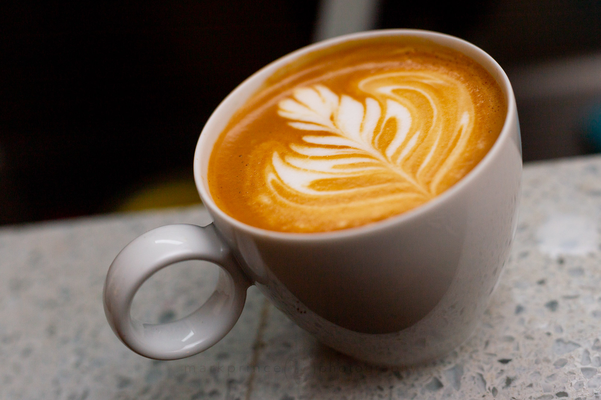

What is Hot Latte????

A hot latte is a creamy, balanced coffee drink made with a shot of rich espresso, hot steamed milk, and a small layer of airy foam on top, offering a smoother, milder coffee flavor compared to straight espresso. The key is the texture and temperature of the milk, which is steamed and slightly frothed, creating a velvety, smooth base that's different from cold lattes, where cold milk and ice are used.